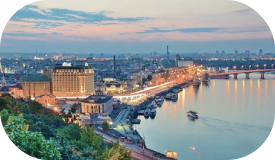

Київ = каштанова столиця



Наша каштанова столиця.
Місто засноване 482 року, налічує близько 3 мільйонів сердець та є 7-м за величиною містом Європи. Найширша й, водночас, найкоротша вулиця в усій Європі - Хрещатик.Метро Києва - одне з найстаріших в Європі, а станція «Золоті ворота» входить в топ-10 найкрасивіших у світі. Від світанків на Співочому полі, заходів сонця на Дніпрі до неймовірно смачної перепічки - тут усе таке рідне.